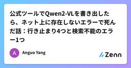

Zennの「大規模言語モデル」のフィード
フィード
圏外の建設現場で一日中聞いてくれる「現場手帳」 ～ローカルLLMとクラウドAIのハイブリッド構成～
Zennの「大規模言語モデル」のフィード
本記事の内容は2026年11月28日時点の情報に基づいています。Surface Laptop Ultraの実機検証をした結果ではありません。実機の数値はすべて公開されているレビューや資料からの引用で、試していないことは「未検証」と書いていますのでご注意ください！ 最近、建設業で働く友人と話すことが多く、建設業の、営業、バックオフィス、現場監督などなど、AIなどが活用できるシーンは多そうだぞ？と感じているこの頃です。 この記事の「現場手帳」も、建設業の方に意見を聞いたりヒアリングしたりしながら立てたアイデアです。 構想だけだと、現場でどう使うのかが伝わりにくいですよね。なので、動くデモ（P...
6時間前

AIに「勝手に決めたこと」を白状させる：実装から逆算する設計補助の手法 1
1
Zennの「大規模言語モデル」のフィード
AIを用いたシステム開発において、出力された成果物が期待通りでなく残念な気持ちになった経験のある人は少なくないと思う。 昨今のLLMはいずれも極めて優秀なコーディング能力を有するため、プロンプトが完全なものであればほぼ無欠と言っていいコードを出力として示すはずである。 そうならない原因の一部は、入力された仕様が十分なものでなく、結果としてAI側で実装時にアドホックな判断を繰り返している点にある。 例えば数値計算の結果を丸めるために四捨五入するか、切り捨てるか、などといった粒度の細かい要件はAIに与える初回の指示からは漏れやすい。 しかし金額計算を扱う業務基幹システムなどであれば非常に優先...
7時間前

GitHub Actionsは成功なのにAI新聞が発行されない：6回の実行ログから学んだこと
Zennの「大規模言語モデル」のフィード
個人開発しているAI最前線新聞（AI FRONTIER）では、公式発表を収集し、日本語の記事を自動生成する仕組みを開発しています。 Web: GitHub: 前回は月額0円を目指す構成と、安全に発行を止める設計を紹介しました。 今回は、2026年11月26〜28日の実行ログを振り返り、GitHub Actionsの成功とプロダクトの成果を分けて観測する必要性を整理します。 日次発行ワークフローには、候補を取得して記事を生成し、品質基準を通過した場合だけ新号を作る仕組みがあります。 全候補が保留の場合、既存号を維持して正常終了します。そのため、Actionsの緑色のチェックだけでは新号の発...
7時間前

Museに頼んだことが翌朝には消えていたのは、記録がなかったからだった
Zennの「大規模言語モデル」のフィード
この記事は、note連載「ハチの任せ方ラボ」の第4回として公開した記事の転載です。原本はこちらです。 この記事で分かること 頼み方が整っても、翌朝にはなぜ消えるのか 残すと続きから始められる3点 今日から使える、終わるときの1つの書き方 複数のAIに互いをレビューさせ、失敗の数字まで公開する運用の記録。第4回です。 第1回でMuseを始めて、第2回で確かめる役を足して、第3回で頼み方を整えた人が、次にぶつかる壁があります。翌朝です。前の日によく頼めたはずなのに、会話を開き直すと、決めたはずの条件が抜けている。直したはずのところが、元に戻っている。同じ説明をもう一度することから1日が始まる...
7時間前

AIが替わっても、仕事を続けたい――Surface Laptop UltraのハイブリッドLLM構想
Zennの「大規模言語モデル」のフィード
AIに仕事を頼んで席を外す。翌朝、続きを頼む前に、まず昨日の記録を読み直す。どこまで進んだのか、何が終わっていないのか。AIに事情を説明するところから一日が始まる。 AIに仕事を任せたはずなのに、いつの間にか私がAIの進行管理をしている。 例えば、外部サービスへの登録を任せた直後、成功の応答が返る前に通信が切れたらどうだろう。翌朝、別のLLMに続きを頼んだとき、もう一度登録してよいのだろうか。 Surface Laptop Ultraを手に入れたら、一台のPCを自分の研究・開発の拠点にしたい。ローカルLLMとクラウドLLMを組み合わせ、人間が目的と重要な判断を担い、複数のAIが許された範...
7時間前

Someone Opened Links From "Zero Data Retention" Prompts Days Later
Zennの「大規模言語モデル」のフィード
Say you paste an error log into a coding agent. Somewhere in that log is a staging URL with a token in the query string. You don't worry about it, because you picked a provider with the "Zero Data Retention" label. The prompt gets processed and thrown away. That's the deal. On November 21, some O...
10時間前

AIエージェントの費用台帳では、「0円」と「未計測」を分ける
Zennの「大規模言語モデル」のフィード
AIエージェントの費用画面にゼロが並んでいても、安く動いているとは限らない。リクエストは成功したが、単価が設定されていなかった。あるいは、別経路の呼び出しが台帳に届いていない。どちらも金額だけでは見落とす。 費用をタスク単位で管理するなら、足し算の前に、何を数えていて、何を取りこぼしているかを確かめる必要がある。 Kong AI Cost Managementは、AI Gatewayが報告したリクエストごとの費用を記録する。ただし、実行時にモデルの価格がなければ表示は$0になる。費用が省略された場合と、ゼロが報告された場合は同じように保存され、後から価格を設定しても過去の記録額は変わらな...
10時間前

「エージェントの権限」ではなく「実行の境界」で守る：AIエージェント時代のサンドボックス設計メモ
Zennの「大規模言語モデル」のフィード
AIエージェントの安全性というと、プロンプトインジェクション対策や権限の最小化が語られがちです。もちろん大事ですが、もう一段下の層、実行の境界も同じくらい重要だと感じています。 このメモでは、その境界の置き方を整理し、最後に公式ドキュメントどおりの手順で Firecracker microVM のサンドボックスを起動するところまで書きます。 私は Sandscale の創業メンバーの Vakeesh です。利益相反があるので、先に書いておきます。 コーディングエージェントは、コードを書くだけでなく、人間がレビューする前に実行することがあります。ツール呼び出しも同様です。そのコードを、共有...
10時間前

AIエージェントはパソコンでは全然ダメなのに、スマホではすごく使える
Zennの「大規模言語モデル」のフィード
パソコンを操作するAIエージェントは、自分の場合まともに使えたことがありませんでした。ところが同じモデルがスマホだと驚くほどうまく動きます。1か月毎日使っていて、今では細かい雑用はほぼすべて任せています。 「学会の経費を精算して」と頼むと、カレンダーから出張の予定を、メールから航空券とホテルの領収書を、Uberから移動の履歴を、カメラロールから食事のレシートの写真を見つけました。そのあと精算ポータルを開いてフォームを埋め、すべて添付し、2段階認証も済ませて提出しました。 実際のタスクには、たくさんのアプリに散らばった情報をまとめる必要があります。スマホにはその情報も、実行に必要なログイン...
10時間前

ローカル LLM の Bonsai に canvas アニメの「重なりのまちがい」を探させてみた (と、描く命令を数える道具)
Zennの「大規模言語モデル」のフィード
canvas で 2D のアニメを描いていると、入れ物と中身の重なりの順をまちがえることがあります。なべの奥のふちの線が具の上に出てしまう、具がなべの手前のかべを突きぬけて見える、といったまちがいです。 スマホの大きさではほとんど見えないので、目で見るチェックでは見のがしがちです。でも、全部のコマを拡大して見るのは大変です。そこで、次の 2 つを試しました。 画像も読めるローカル LLM の Bonsai (Ternary Bonsai 2.5 27B と画像用の mmproj) に、コマの絵を見せて聞く 絵を見ないで、canvas に描く命令を記録して数える道具を作る 2026 年 1...
11時間前

AIに「字数を埋めろ」と指示したら、事実を捏造した
Zennの「大規模言語モデル」のフィード
店舗の告知原稿を1本入れると、WordPress・X・Instagram・Googleビジネスプロフィールの4媒体向けの文章をまとめて生成するツールを作りました。 動くものはここにあります。 このツールで一番時間をかけたのは、生成そのものではありません。生成した後に、機械で検査する処理です。なぜそこに時間をかけたのかという話を書きます。 最初のプロンプトには、媒体ごとの目安字数を入れていました。WordPressは600字程度、Instagramは300字程度、というような指定です。短すぎる出力が返ってくるのが嫌だったので、「指定の字数に届くまで書くこと」という趣旨の指示も添えました。 ...
12時間前

スキルを自動で直す手法 ── SkillOpt・SkillAdam・SSO・SkillReducer・GEPA と、それを疑う BiPA
Zennの「大規模言語モデル」のフィード
スキル（SKILL.md）を自動で直す手法は、2026 年に入って一気に増えました。どれも「実行して、失敗を見て、直す」と説明されますが、1 回の改善で具体的に何をしているかは手法ごとにかなり違います。その違いが、どの場面に向くかを決めています。 本稿では、論文の本文と公開されているソースを読み、各手法を次の観点で分解しました。 何が要るか（正解、採点関数、実行記録） 1 回の改善で何をするか 直した案をどう採用するか どれくらい費用がかかるか 何が報告されているか どう使うか 弱点 数字はそれぞれの論文の設定での値です。論文はどれも提案者自身が書いたもので、比較相手も提案者が動かしてい...
12時間前

TokenEconomizer を入れて測ったら、最初は「効いていない状態」を測っていた
Zennの「大規模言語モデル」のフィード
こんにちは、Mochiです。 AIエージェントのトークン費用を抑えるプラグイン「TokenEconomizer」を、Claude Code に入れて実測しました。同じタスクを繰り返し実行し、導入前と導入後でトークン量と費用を比べた記録です。 結論を先に書きます。 仕組みを効かせた状態では、導入前と比べてトークンが約35%、費用が約38%少なくなりました（6回の平均） ただし、最初に測った「導入後」は、プラグインの仕組みがどれも効いていない状態でした。その状態でも約13%減っていたので、減った分を全部プラグインの効果とは言えません 学習（micro-skills）の効果は、この測定のやり方...
13時間前

ColabでセルフホストLLM：StrataとローカルのpiをSSHトンネルでつなぐ
Zennの「大規模言語モデル」のフィード
Google AI Studio のブラックフライデーで Pro を年間契約したところ、Colab のコンピュートユニットが毎月 200 CU 付いてきました。せっかくある枠なので放置して消えるのはもったいない。それと、前々から気になっていた推論エンジンの Strata（Strata Terminal）を一度ちゃんと触ってみたかった、というのが今回のきっかけです。 手元のマシンに 24GB 級の GPU は積んでいません。かといって、普段いじっているリポジトリを Colab のノートブック側へ丸ごと上げて作業するのは同期が面倒ですし、できればコードベースはローカルに置いたままにしたいとこ...
13時間前

llama-quantizeで狙ったサイズのモデルを作成
Zennの「大規模言語モデル」のフィード
llama.cpp v1.1.0の量子化ツールllama-quantizeに、サイズで最適化する--target-sizeとbpw（ウェイトあたりのビット長）で最適化する--target-bpwという新しい機能が追加されました。VRAMサイズや精度と相談しつつ、自分の目的にあったサイズのモデルに量子化できる、なかなか便利な新機能です。それをさっそく試してみました。 llama-quantizeは、次のような感じで量子化タイプを指定していました。 ご存知の通り、Q4_K_Mなど多くの量子化タイプは、モデル内部の埋め込み層や出力層、アテンション層などに異なる型が使われます。モデルのうちAtt...
13時間前

LLM APIの入力トークン、43%が「同じ文章の再送」だった — 実測して月額を54%削った話
Zennの「大規模言語モデル」のフィード
毎月の請求は「まあこんなものか」で見送っていました サブスクもバーコード決済も、現金が手から出ていかないので減った感覚が残りません API の請求も同じで、桁が小さいうちは痛みがないまま使い続けていました 重い腰が上がったのは「で、1日いくらかかってるの?」に答えられなかったときです 口頭で見積もってみたら月¥2,184 ところが実データで数え直すと実額は月¥1,411で、見積もりのほうが2箇所間違っていました (課金ゼロの機能を数えていた・モデルを取り違えていた) 金額そのものより、自分が課金の中身を把握していなかったことのほうが効きました 個人運用しているニュース自動収集パイプライン...
14時間前

Soft Promptのスキルは、なぜ足し算できないのか
Zennの「大規模言語モデル」のフィード
「スキルAの正答率が高い。スキルBも高い。ならばAとBを続けて実行できるはず」。モジュール化されたLLMを設計するとき、この推論を無意識に置いてしまいがちだ。 11月25日に公開された When Skills Fail to Compose は、この仮定を正面から試した研究だ。[1] 凍結した言語モデルに、異なる操作を実行するSoft Promptを別々に学習させ、その組み合わせ、置き換え、修復を測る。論文の主題はLoRAの重みマージではない。それでも複数アダプタを運用する人にとって、評価項目の設計がかなり参考になる。 Soft Promptは、学習可能な連続ベクトル列を入力側に付け加え...
16時間前

書き込み時 LLM 呼び出しゼロ・常駐約 75 MB の Rust メモリエンジンで 5 大長期記憶ベンチマーク計 10,957 問を実測・
Zennの「大規模言語モデル」のフィード
AI エージェントに数百万〜1,000 万トークン規模の長期記憶を持たせようとすると、実務では大きく 3 つの壁に突き当たります。書き込みのたびに LLM 要約や埋め込み計算が走ってコストが膨らむこと、ベクトル検索のメモリフットプリントが数 GB 単位に膨れ上がること、そして仕様変更や方針撤回が起きた際に古い記録と新しい記録が混在して根拠を追えなくなることです。 私たちは、この課題に対して「書き込み時の非破壊・決定論的永続化」と「検索時のマルチパス抽出」を明確に分離した単一バイナリの Rust エンジン（LongMemOS / mb-server）を設計しました。書き込み時に LLM 呼...
17時間前

公式ツールでQwen2-VLを書き出したら、ネット上に存在しないエラーで死んだ話：行き止まり4つと検索不能のエラー1つ
Zennの「大規模言語モデル」のフィード
手順書どおりにやりました。ベンダー公式のツールキット、公式のガイド、ツールキットが「対応」とうたうモデル。ビルドステップ371件が全部緑で流れていって——最後に、丁寧に死にました。エラーメッセージは、公開インターネット的には「誰にも起きたことがない」ものでした。 エラー全文がこれです。 検索してみてください。私も認めたくないくらい何度も検索しました。結果ゼロ。フォーラムにも、GitHub issueにも、読める言語のブログにもない。あるのは私とターミナルと、この世でここにしか存在しない文字列だけ。 まず疑うのはここですよね。インストール不良、環境の相性、どこか半壊れ。 なので、わざと条件...
17時間前

AIエージェントの原型は3本の論文にあった：ReAct、SWE-bench、SWE-agentを読み解く
Zennの「大規模言語モデル」のフィード
Claude Code や Codex のようなコーディングエージェントを使っていると、不思議な既視感があります。 ファイルを探し、関係ありそうな箇所を読み、編集し、テストを回して、失敗したらログを見て直す。まるで人間の開発者の手順をなぞるような動きです。しかも、その合間に「次はこれを確認する」「このエラーは想定と違う」といった短い思考が挟まります。 この動きは、誰かが思いつきで決めたものではありません。2022年から2024年にかけて発表された3本の論文で、部品が1つずつ発明され、検証されてきた結果です。 ・2022年 ReAct 思考と行動を交互に回す「ループ」の発明 ・2023年 ...
18時間前